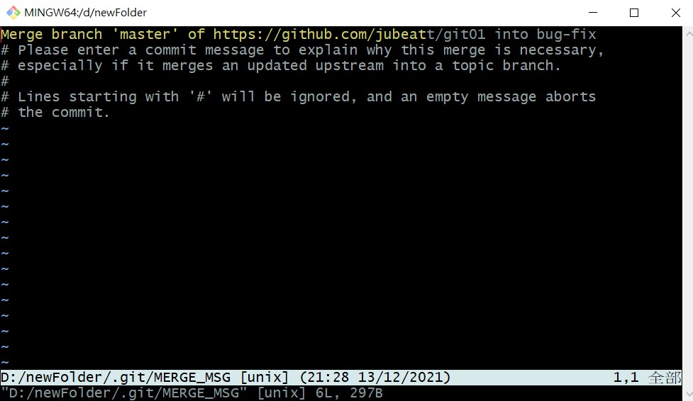

如題。
當本地與遠端 commit 次數不同的時候
假設一開始本地跟遠端的 commit 都是 10 次，現在本地做了更新後變成 commit 11 次，也就是比遠端多出一次，這個時候如果你用 git status 會得到以下訊息：
1 | On branch master |
Git 會告訴你目前本地端的 commit 次數比遠端多幾次（這裡是 1 次）
但如果反過來，現在是「遠端比本地 commit 次數還要多」的時候，Git 不會告訴你遠端比本地的 commit 還要多的這個訊息。
在遠端進行合併的動作
假設遠端有 master 跟 AAA 分支，你可以在 GitHub 發送一個 pull request 跟原作者說，「欸，我想要把 AAA 合併到 master，可以嗎？」。
作者如果同意的話，AAA 就會被合併到 master，完成這個 pull request，換句話說就是「在遠端把兩個分支給合併」的意思。
從遠端同步到本地時要特別注意的事（1）
如果遠端的 commit 比本地端超前進度，那從本地要 push 到遠端時，Git 會告訴你：
1 | hint: Updates were rejected because the remote contains work that you do |
簡單來說的意思就是：同步遠端失敗，因為遠端的 repository 進度超前（被別人更新過內容），所以你得先用 pull 把目前最新的版本抓下來，再重新 push 上去。
從遠端同步到本地時要特別注意的事（2）
如果你在遠端建立新的 repository 並且送了幾個 commit，當你要 pull 到本地端的時候會噴一段錯誤：
（或者是你本地端的 .git 檔案被刪掉了也有可能發生）
1 | fatal: refusing to merge unrelated histories |
意思是說遠端跟本地端的歷史紀錄（commit）不相干，所以不讓你 merge。
解決的辦法是加上 –allow-unrelated-histories：
1 | git pull origin master –allow-unrelated-histories |
在分支 A 上 pull 分支 B 會怎樣？
如果你在 A 分支用 git pull origin B，這個意思是「我要讓 A 跟 B 的檔案同步」，但你也知道這兩個是不同的分支，那怎麼辦？
那就讓他變成一個分支就好了啊！
沒錯，Git 也是這樣想的，所以 Git 會先幫你把 B 合併到 A 這個分支，接著在把檔案給同步。
不過要提醒你，在不同的分支用 git pull 這個指令是有點不合邏輯的（你怎麼會想把兩個不同的分支做「同步」的動作？），所以如果你硬要這樣做的話，Git 還是會幫你做，但它會跳一些訊息提醒你：

（Git 會要你解釋一下，why 你要這樣做？）